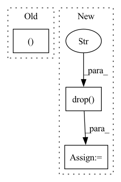

Pattern ID :7543

Before Change
temporal_y = (temporal_y - y_means) / y_stds
temporal[:, temporal_cols.get_loc("y"), :] = temporal_y
return batch, y_means, y_stds
def _inv_normalization(self, y_hat, y_means, y_stds):
return y_stds[:, None]*y_hat + y_means[:, None]
After Change
temporal_cols = batch["temporal_cols"].copy()
// Separate data and mask
temporal_data_cols = temporal_cols.drop("available_mask").tolist()
temporal_data = temporal[:, temporal_cols.get_indexer(temporal_data_cols), :]
temporal_mask = temporal[:, temporal_cols.get_loc("available_mask"), :].clone()
// Remove validation and test set to prevent leakeage
if self.val_size + self.test_size > 0:
cutoff = self.val_size + self.test_size
temporal_mask[:, -cutoff:] = 0
// Normalize. self.scaler stores the shift and scale for inverse transform
temporal_mask = temporal_mask.unsqueeze(1) // Add channel dimension for scaler.transform.
temporal_data = self.scaler.transform(x=temporal_data, mask=temporal_mask)
// Replace values in windows dict
temporal[:, temporal_cols.get_indexer(temporal_data_cols), :] = temporal_data
batch["temporal"] = temporal
return batch
In pattern: SUPERPATTERN
Frequency: 4
Non-data size: 3
Instances
Fragment ID: 24897867
Project Name: nixtla/neuralforecast
Commit Name: 73dab945c58726e3f150b851bb94e3a003a590a0
Time: 2022-11-02
Author: mergenthaler.m@gmail.com
File Name: neuralforecast/common/_base_recurrent.py
M Class Name: BaseRecurrent
N Class Name: BaseRecurrent
M Method Name: _normalization(2)
N Method Name: _normalization(2)
M Parent Class: pl.LightningModule
N Parent Class: pl.LightningModule
M File Name: neuralforecast/common/_base_recurrent.py
N File Name: neuralforecast/common/_base_recurrent.py
M Start Line: 106
M End Line: 124
N Start Line: 104
N End Line: 125
'>
Before Change
rolling=config_missing.impute_rolling,
)
df = df_utils.check_dataframe(df)
df_dict, _ = df_utils.prep_copy_df_dict(df)
local_data_params, global_data_params = df_utils.init_data_params(df_dict=df_dict, normalize="minmax")
df = df_utils.normalize(df, global_data_params)
// Check if ValueError is thrown, if NaN values remain after auto-imputing
After Change
)
df = df_utils.check_dataframe(df)
local_data_params, global_data_params = df_utils.init_data_params(df=df, normalize="minmax")
df = df.drop("ID", axis=1)
df = df_utils.normalize(df, global_data_params)
df["ID"] = "__df__"
// Check if ValueError is thrown, if NaN values remain after auto-imputing
with pytest.raises(ValueError):
'>
Fragment ID: 24897866
Project Name: ourownstory/neural_prophet
Commit Name: 7fcf23557cb5b30885a8a07387d411c61a50a05e
Time: 2022-06-21
Author: mgheorghecr@gmail.com
File Name: tests/test_unit.py
M Class Name: AnonimousClass
N Class Name: AnonimousClass
M Method Name: test_too_many_NaN(0)
N Method Name: test_too_many_NaN(0)
M Parent Class:
N Parent Class:
M File Name: tests/test_unit.py
N File Name: tests/test_unit.py
M Start Line: 757
M End Line: 758
N Start Line: 813
N End Line: 817
'>
Before Change
y_df = pd.read_csv(f"{path}/{group}.csv")
y_df, X_df = process_multiple_ts(y_df)
S_df = None
if cache:
After Change
y_df = y_df.sort_values(["unique_id", "ds"], ignore_index=True)
y_df = y_df[["unique_id", "ds", "y"]]
X_df = pd.read_csv(f"{path}/{group}/{kind}/df_x.csv")
X_df = y_df.drop("y", axis=1).merge(X_df, how="left", on=["ds"])
S_df = None
if cache:
'>
Fragment ID: 24897865
Project Name: nixtla/neuralforecast
Commit Name: 8021addd47470ad9779e83950f7be85f3eba457e
Time: 2022-01-31
Author: fede.garza.ramirez@gmail.com
File Name: nixtlats/data/datasets/ett.py
M Class Name: ETT
N Class Name: ETT
M Method Name: load(3)
N Method Name: load(3)
M Parent Class:
N Parent Class:
M File Name: nixtlats/data/datasets/ett.py
N File Name: nixtlats/data/datasets/ett.py
M Start Line: 108
M End Line: 112
N Start Line: 84
N End Line: 89
'>
Before Change
df_train, df_val = df_utils.split_df(df_in, n_lags, n_forecasts, valid_p)
// create a tabularized dataset from time series
df = df_utils.check_dataframe(df_train)
df_dict, _ = df_utils.prep_copy_df_dict(df)
local_data_params, global_data_params = df_utils.init_data_params(df_dict=df_dict, normalize="minmax")
df = df_utils.normalize(df, global_data_params)
inputs, targets, _ = time_dataset.tabularize_univariate_datetime(
After Change
// create a tabularized dataset from time series
df = df_utils.check_dataframe(df_train)
local_data_params, global_data_params = df_utils.init_data_params(df=df, normalize="minmax")
df = df.drop("ID", axis=1)
df = df_utils.normalize(df, global_data_params)
inputs, targets, _ = time_dataset.tabularize_univariate_datetime(
df, n_lags=n_lags, n_forecasts=n_forecasts, config_missing=config_missing
)
'>
Fragment ID: 24897869
Project Name: ourownstory/neural_prophet
Commit Name: 7fcf23557cb5b30885a8a07387d411c61a50a05e
Time: 2022-06-21
Author: mgheorghecr@gmail.com
File Name: tests/test_unit.py
M Class Name: AnonimousClass
N Class Name: AnonimousClass
M Method Name: test_time_dataset(0)
N Method Name: test_time_dataset(0)
M Parent Class:
N Parent Class:
M File Name: tests/test_unit.py
N File Name: tests/test_unit.py
M Start Line: 81
M End Line: 82
N Start Line: 81
N End Line: 83